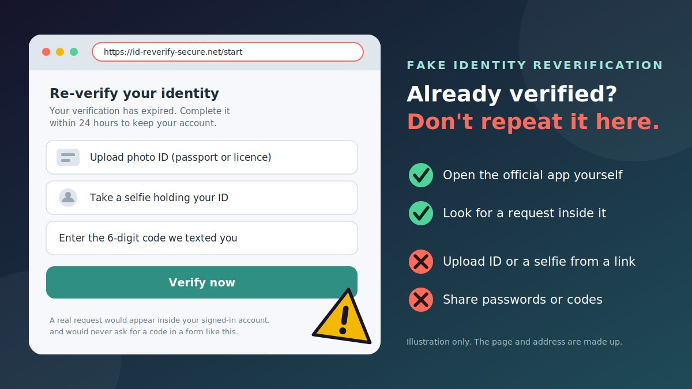

"Your identity verification has expired. Re-verify within 24 hours to keep your account." You already verified once, so the request feels routine, and a polished message from what looks like your AI platform, bank, or favourite app seems to confirm it. The link opens a page that asks for a photo ID, a selfie, and a code. That is the whole trick. The scammer does not need to break anything. They need you to do the "verification" for them.
How fake identity reverification scams work
Scammers copy a request people already expect. Banks run know-your-customer checks, online services check ages and accounts, and some AI platforms ask users to verify their identity for certain features, often through a third-party provider. That makes "please verify again" sound normal. The European Banking Authority notes in its guidance on online fraud in an AI world that criminals use AI to make messages and impersonation more convincing, and it urges people to check the source carefully and use official channels to contact their bank.
- The notice. An email, text, call, or pop-up says your verification expired, failed, or needs to be "refreshed."
- The pressure. A short deadline and a threat: suspended access, frozen funds, a closed account.
- The link. It opens a page that copies a real login or verification screen, sometimes using the name of a real verification provider.
- The collection. You are asked for a password, a one-time code, a photo of your ID, and often a selfie, sometimes holding the ID.
- The follow-up. A second request, a call from a "specialist," or an error page that makes you try again.
Who they pretend to be
| Impersonated | The story | What they ask for |
|---|---|---|
| AI platform | "Re-verify to keep access, credits, or your account" | Login, one-time code, payment details, sometimes ID |
| Bank or payment app | "Your KYC has expired" or "unusual activity, verify now" | Banking login, card details, OTP, ID and selfie |
| Online service or marketplace | "Age or identity re-check required" | ID photo, selfie with ID, account login |
| Verification partner | "Complete verification with our trusted partner" | Documents and a face scan on a lookalike partner page |
| Employer or recruiter | "Verify your identity to start your job" | ID documents, selfie, and bank details |
What scammers do with what you give them
| What you give | What it can be used for |
|---|---|
| Password | Taking over your account, then trying the same password elsewhere |
| One-time code (OTP) | Completing a sign-in or payment the scammer has just started. The code you receive is for their attempt, not yours. |
| Photo of ID and selfie | Trying to open accounts or apply for credit in your name, or backing up further impersonation |
| Card or bank details | Unauthorised payments and follow-up "fraud team" calls |
| Personal details | Targeted phishing that already knows your name, address, and provider |
What many guides miss: real verification versus fake re-verification
Guides often say "never click verification links," then leave readers unsure what a legitimate check looks like. The difference is mostly where it starts and what it asks for.
| What to check | Usually genuine | Warning sign |
|---|---|---|
| Where it starts | Inside your signed-in account or app, or after an action you took | An unexpected email, text, call, ad, or pop-up |
| Where it happens | The service's own site or app, or a provider it clearly hands you to from inside your account | A separate address you reached from a message |
| What it asks | Documents or a selfie through the secure flow, after you are signed in | Your password, OTP, or card details in a form, or a selfie sent by chat or email |
| The deadline | Gives you time and a way to check with the service | Hours, then loss of access |
| Repeats | A single, explained request | An error page that makes you try again, then another request |
A known verification provider's name does not prove a link is real. ID.me, an identity verification company, says on its help site that verifying with it requires you to create your own account, and that you should be cautious if someone asks you to take a selfie or join a video call without setting one up yourself. The same site warns about fake job offers that ask for a selfie to "verify" you. Whatever the provider, start from the official app or website of the service that asked.
Warning signs of a fake reverification request
- You did not trigger it. It arrived out of the blue, and nothing in your account mentions it.
- It says you must "re-verify" or that verification "expired," especially with a deadline of hours.
- It threatens suspension, loss of funds, or account closure.
- It asks for a password or OTP, alongside documents.
- It asks for a selfie holding your ID, or a video call, through a link or in a chat.
- The address is not the service's own, or includes extra words like "verify," "secure," or "id."
- The link goes through a redirect, a shortened link, or a QR code.
- The sender's address does not match the company, even if the display name does.
- It asks you to pay a fee to complete verification.
- It arrives with a call from a "specialist" who offers to guide you through it.
Realistic scam message examples
These are composite examples written to show the pattern. They are not reports about real people, and the details are made up.
Example 1: The AI platform "re-verify to keep access" email
- From
- "Trust & Safety" <no-reply@random-string.example>
- Subject
- Action required: re-verify your identity to keep your account
Our systems flagged unusual activity. To keep access to your plan and credits, re-verify your identity within 24 hours. [Verify now]
Why it's a scam: a non-company sender, a vague "unusual activity" claim, and a deadline. Open the AI service yourself and check for a notice inside your account.
Example 2: The bank "KYC expired" text
- From
- An ordinary mobile number
Your KYC has expired. Re-verify now to avoid account restrictions: bank-reverify.example/start
Why it's a scam: a link in a text, a lookalike address, and a threat. Banks handle KYC through their app, branch, or official site.
Example 3: The "age and identity re-check" email
- From
- "Account Security" <security@lookalike-service.example>
- Subject
- Your account will be limited: verify your identity
Upload a photo of your passport or driving licence and a selfie holding it to restore full access.
Why it's a scam: a selfie holding your ID, requested by email, is exactly what an identity thief wants. Documents belong only inside a service you opened yourself.
Example 4: The "trusted verification partner" link
- Channel
- Email, text, or chat
To finish setting up, complete a quick check with our trusted partner: verify-partner-id.example. You will need a photo ID and a short selfie video.
Why it's a scam: naming a "partner" makes it feel official. Real services hand you to providers from inside your account, and you can confirm the request there.
Example 5: The "job verification" request
- Channel
- Message from a "recruiter"
Congratulations, you have the job. To start, verify your identity by clicking this link and taking a selfie with your ID, then send us your bank details for payroll.
Why it's a scam: ID, a selfie, and bank details together are a full identity kit. Never verify your identity for someone you only met online.
How to check a suspicious URL
- Do not click. Press and hold a link to read its address without opening it.
- Find the domain. It is the part right after
https://and before the first single/. Inhttps://account.service.id-verify.net/start, the real site isid-verify.net. - Read the ending first. The last parts decide who owns the page. Anything in front can be made up.
- Compare with the official address, which you take from the service's app, your account, or a bookmark you made earlier.
- Watch for tricks: extra words ("verify," "secure," "id"), hyphens, swapped letters, or odd endings.
- Check redirects and shortened links. If the address contains the word "redirect" or another web address inside it, the real destination may differ.
- Do not trust the padlock. https only means the connection is encrypted. Fake pages can have it too.
- Look at the page, not just the link. A real verification page does not ask for your password and a one-time code together on a single form.
Try the link scanner
Paste a link, and if you know the company's real address, enter it too. The tool compares the two and looks for common tricks. It reads the text only. It does not open the link, and nothing you paste leaves your browser.
How to reverify safely through official channels
If you think a service may really need you to verify again, go to it yourself.
- Leave the message alone. Do not click, reply, scan a QR code, or call a number in it.
- Open the official app, or type the website address yourself. Use a bookmark you made earlier, or an app from your phone's official app store.
- Sign in and look for a notice. A genuine request will usually appear in your account, such as in a banner, notifications, or a security or verification section.
- If there is a request, finish it there. If the service hands you to a verification provider, that should happen from inside your signed-in account.
- If there is no request, the message was probably a scam. You do not need to do anything.
- Need to ask? Contact the service through the support options inside its app or website, or call the number on your card or official site for a bank.
- Never share your password or a one-time code with anyone, including a "support agent."
Where did the request come from?
Prevention tips
- Never share passwords or one-time codes, even with someone who says they are from support or security.
- Bookmark the sign-in pages of your bank, email, and AI services, and use the bookmark instead of message links.
- Use stronger sign-in protection, such as passkeys or security keys where offered. Phishing-resistant sign-in is designed to fail on a fake site.
- Use a password manager. If it will not fill your saved login on a "verification" page, the address may be wrong.
- Keep ID photos out of chats and email. Share them only inside a service you opened yourself and trust.
- Use a different password for each important account, so one leak does not open others.
- Turn on alerts for sign-ins, new devices, and transactions.
- Treat unexpected sign-in prompts and codes as warnings. If you get a code you did not request, someone may be trying to get into your account. Do not share it.
- Slow down. Urgency is the scammer's tool, and a real problem will still be there after you check through the official app.
- Talk to family and colleagues, especially people who deal with accounts or ID checks for work.
What to do if your ID documents or login details are exposed
Act quickly, and do not be embarrassed. These pages are made to look routine. The right steps depend on what you shared.
If you entered a password or a one-time code
- Change the password from the official site, which you typed yourself, and on any other account that used the same one. Start with your email.
- Turn on two-step sign-in or a passkey, and sign out other sessions if the service allows it.
- Review account activity, including recent sign-ins, changed details, connected apps, and billing.
- If you use API keys or saved payment methods, rotate the keys and check the payment methods.
If you uploaded an ID document or a selfie
- Report lost or exposed documents to the issuer. The UK government's fraud advice says to report lost or stolen documents to the organisation that issued them, such as the Passport Office or the DVLA, and your bank. In other countries, contact your own passport, licence, or national ID authority and ask what they recommend.
- Check your credit reports for applications or accounts you did not make, and report mismatches to the credit reporting agencies.
- Consider extra protection against new accounts. In the United States, the FTC's IdentityTheft.gov explains how to report identity theft, get a recovery plan, and place a fraud alert or a credit freeze with the credit bureaus. In the UK, Protective Registration with Cifas asks member organisations to carry out extra checks when your details are used.
- Tell your bank and the services where you use that ID, so they can watch for misuse.
- Watch for follow-up. Be ready for calls, texts, and emails that already know your details.
If you shared card or bank details
- Call your bank or card issuer immediately, using the number on your card, and ask them to block the card and review recent transactions.
- Dispute any charge you did not make, and ask about your options.
- Do not move money to a "safe account" for anyone who calls you.
Keep evidence: the message, sender address, links, screenshots, and the details you entered. Be wary of anyone who contacts you offering to fix your identity or recover your money for a fee, which is often a second scam. Recovery cannot be promised, but quick action gives the best chance of limiting the damage.
Where to report, by country
| Country | Report to |
|---|---|
| United States | IdentityTheft.gov and ReportFraud.ftc.gov (FTC), and the FBI's IC3. |
| United Kingdom | Report Fraud (formerly Action Fraud). Forward scam emails to report@phishing.gov.uk. |
| Canada | Canadian Anti-Fraud Centre (1-888-495-8501), and the credit bureaus Equifax and TransUnion. |
| Australia and New Zealand | Scamwatch and ReportCyber in Australia, and IDCARE for identity support. |
| India | National Cyber Crime Helpline 1930 and cybercrime.gov.in. |
| Singapore | ScamShield (helpline 1799) and the police. |
| Elsewhere | Your national police cyber unit, consumer protection authority, ID issuing authority, and your bank. |
Conclusion
The fake identity reverification scam works because "verify again" sounds like paperwork you have already done. You do not need to judge every message. Treat any unexpected request to verify your identity through a link as unverified, open the official website or app yourself, look for the request inside your account, and never give out passwords or one-time codes. If your documents or logins were exposed, secure your accounts, tell the document issuer and your bank, and watch your credit.
Related scams use the same pressure. Read our guides on the fake digital identity verification link scam (which includes India-specific steps), the fake AI subscription cancellation scam, the fake AI customer support chat scam, and the fake QR code verification scam.
Got a message or link you are unsure about? Paste the text into our free checker for a quick first read.
Frequently asked questions
What is a fake identity reverification scam?
It is a scam where a message, email, call, or pop-up claims you must verify your identity again, and sends you to a fake link or form. The aim is to collect your password, one-time codes, identity documents, selfies, or payment details.
Do real services ever ask me to verify my identity again?
Yes, some banks, online services, and AI platforms do ask for identity checks, sometimes through a third-party provider. The safe way to respond is to open the official app or website yourself and look for the request inside your signed-in account, not to follow a link in an unexpected message.
Why would scammers want my ID and selfie?
Photos of identity documents and selfies can be used to try to open accounts or apply for credit in your name, or to support further impersonation. That is why they should be shared only inside a service you opened yourself.
What should I do if I uploaded my ID or entered my password on a fake page?
Change passwords from the official site and turn on stronger sign-in protection, contact your bank if financial details were shared, report the exposed document to the issuing authority, check your credit reports, consider fraud alerts or a credit freeze, and report the scam to your national fraud service.
Is a link that mentions a known verification provider safe?
Not necessarily. A scam link can use a real provider's name or look. Start from the official app or website of the service that asked you to verify, and check the address in your browser before you enter anything.
Got a verification request you want checked?
Run it through the checker